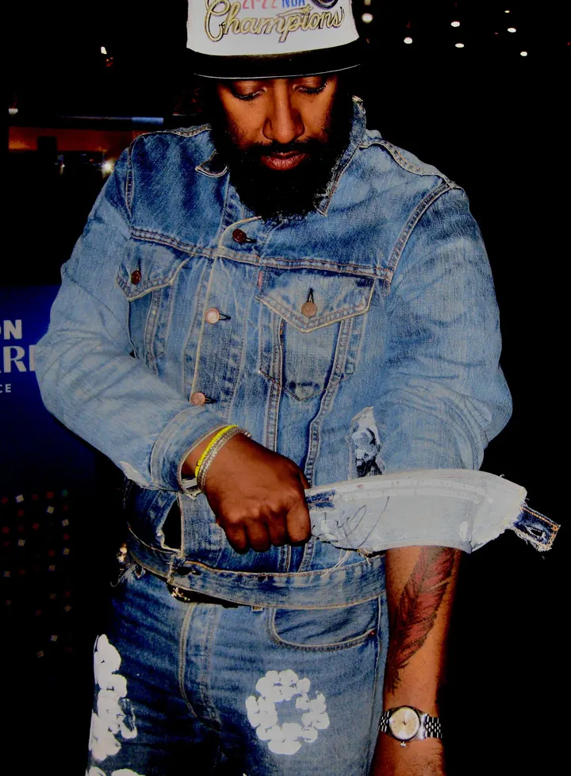
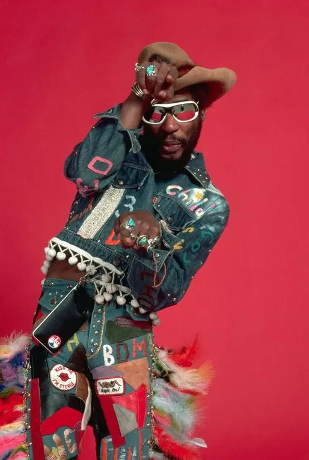
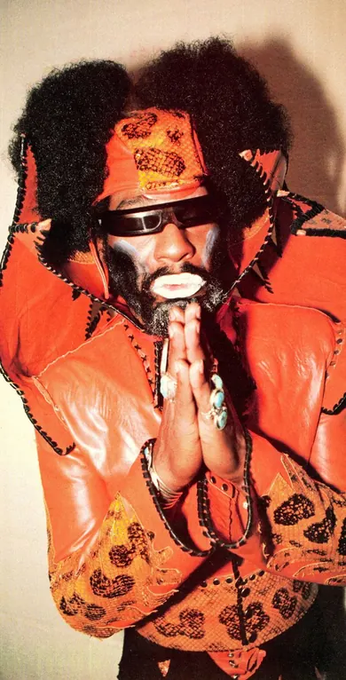
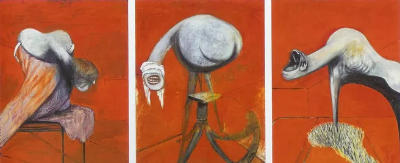
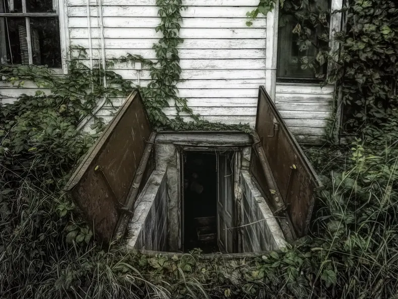
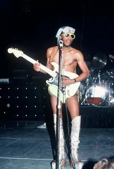
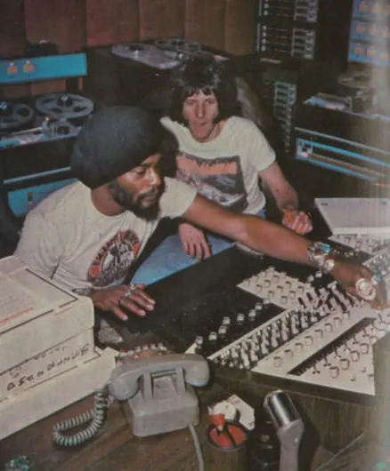
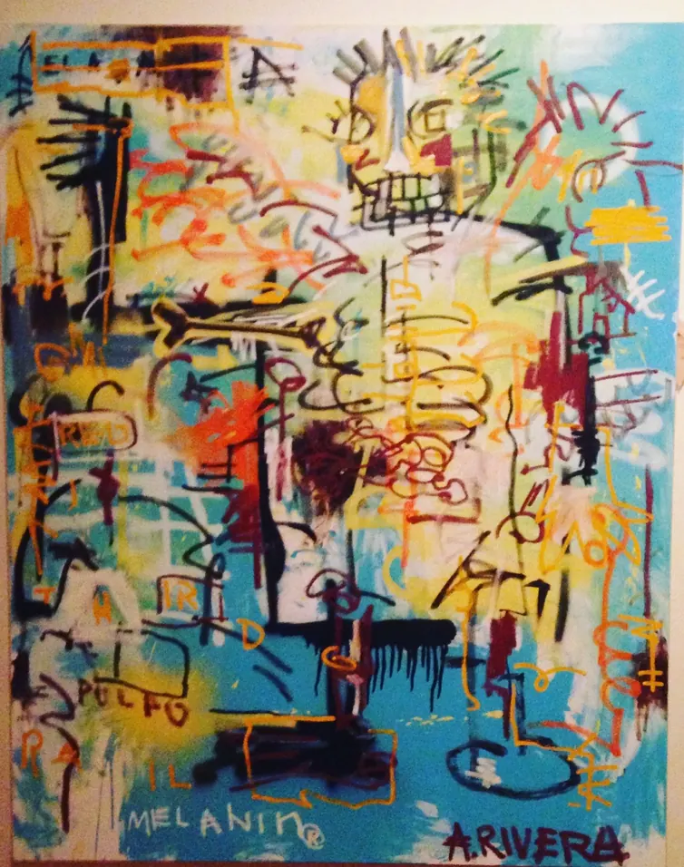

MEET
THE
FUNK
WHEN 2 FLY DUDES SEE EACH OTHER IT'S LIKE A GLITCH IN THE MATRIX. THE GAME YOU BEEN PLAYING YOUR WHOLE LIFE IS NOT SINGLE PLAYER. HIS EYES SHADED BY A DENIM TEARS HAT WITH THE COLORED HANDS OF BLACK PEOPLE PRINTED ATOP IT’S LEVI’S BASE. DYED DENIM ADORNED THE REST OF HIS BODY, WITH WORK BOOTS COMPLETING HIS STEEZE.
MY FIRST TIME MEETING UP WITH RIVI, WE GEEKED OUT OVER A PAIR OF VINTAGE LEVIS STREWN OUT ON THE TABLE OF A DIMLY LIT DIVE BAR. HIS PAINTINGS ARE AN ECLECTIC MIX OF STYLES, FROM BASQUIAT TRIBUTES, TO FINE ART RECREATIONS OF MANSA MUSA BEARING HIS OWN FACE.
AMEER: Did graffiti eventually lead you to becoming a fine artist?
RIVI: Graffiti is a way of life.
I got ups, I've been out there. I was tagging in Iraq. Fuck fame. Fame is the sweetest pussy that will eventually go dry. I used to crave fame. I quickly understood I can never do as much as my OG. I'm just happy to be in the room. I'm not trying to outdo them.
AMEER: Do artists go wrong when they stop being humble?
RIVI: I'm not humble, I know who I am. Do you know Francis Bacon? Fuck Pablo Picasso. Check out Francis Bacon He was unapologetically gay He didn’t give a fuck. That’s how I am. I'm not here to be white. I'm not here to be humble.



“Three Studies for Figures at the Base of a Crucifixion” (1944)
By Francis Bacon
AMEER: I read about you selling a painting to George Clinton. How did that end up happening?
RIVI: I was going to art school in Tallahassee. A dude I met said I could introduce you to George Clinton. Bullshit. Got his contact but missed his first call. Next time I saw him he said I missed my shot, and next time he called I better pick up. Little while after, I get the ”come through, George is in town.” I'm like what's the address? I type in the address. It's a min away.
AMEER: Sounds like a set up.
RIVI: Felt like a set up. I look at this dilapidated scene. Looks like no one has been here in eons. Weed bags and trash in an empty overgrown parking lot. I thought George Clinton had nice shit!
I see a handwritten sign that says studio next to the porch door. Hit the buzzer. No response. Hit the buzzer. No response. I walk away but the door opens behind me. My boy opens the door, “Ay Rivi where you going?” I Instantly saw the framed George Clinton photos along the wall.



They were personal, never seen in a magazine. The first performance he ever did in diapers, Gotta be 60s. Walk to this hazy backroom where he’s recording.
Lo and behold, The funk. the king. Right in front of me I met George and was just a fly on the wall. I was just kicking back, and didn't pass any weed.
AMEER: Haha, what about your homie? And the band?
RIVI: Hell no. I'm from New York. They the same. My herb is the sacrament. The first time George Clinton and I hung out, he asked, “what do you do? Music, Instruments?” I said no. His face instantly dropped from a smile to a frown. “Do you do graffiti?” I had actually tagged the outside of his studio beforehand, I thought he had seen it and was trying to catch me. I said no. He got real serious and looked me dead in the eyes. “What do you do?” Y'know, on some, “Why are you here?” Type shit. “I do art.” The smile came back. “ I do fine art. ” He chuckled, then dropped. “ I can dig, I can dig, bring some to the studio.”

He loved them. When someone really understands your work they look past the facade.
He told me to go into his closet and use his art supplies. George is a painter who can really paint.
“You have access to this room as long as you live. You can take anything you want.”
Felt real creative one night. I made this painting in 3 hours. I usually never rush anything, I just felt so inspired. I named it Melanin Shine. “George wants to buy one of your pieces.” Those are the best eight words I've ever heard in my life. That's in his house now. No longer the studio. I ended up styling the band members for a show in February 2023. Vintage Levis reversible jacket that had a black puffer interior, the outside was denim. Now I’m an official member of Parliament Funkadelic.


ざっし（Za ]
ｋ。ンタクト
SHI
ツ